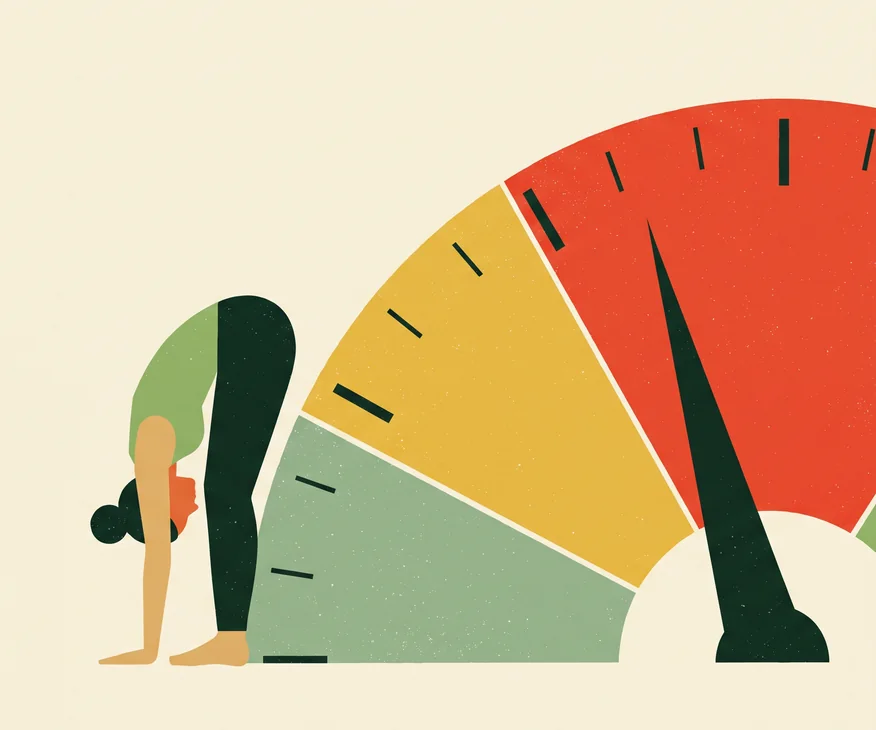
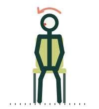
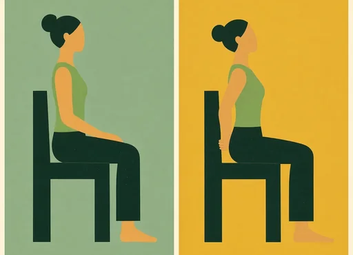
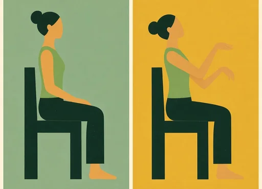
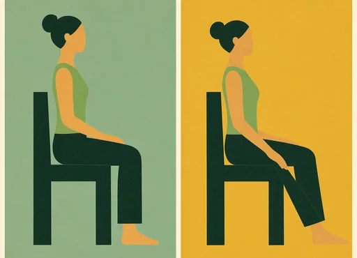

A 60-second chair stretch
Stop if you feel sharp pain. This is not medical advice.
-

Neck turn
-

Chest opener
-

Wrist circles
-

Ankle stretch
1 Neck turn 15 seconds
Sit up, shoulders down, look ahead. Slowly turn your head toward your left shoulder, only as far as is comfortable. Hold 5 seconds, come back to the middle, then turn right.
The NHS says this is good for neck mobility. NHS, Flexibility exercises
2 Chest opener 15 seconds
Sit away from the chair back. Pull your shoulders back and down and put your arms out to the sides. Gently push your chest forward and up until you feel a stretch. Hold 5 seconds, relax, repeat.
The NHS says this stretch is good for posture. NHS, Sitting exercises
3 Wrist circles 15 seconds
Hold both arms out in front of you with loose fists. Slowly circle your wrists outward a few times, then inward.
Mayo Clinic says this can help blood flow to your hands. Mayo Clinic, Wrist and forearm stretches for the workplace
4 Ankle stretch 15 seconds
Sit up and hold the side of the chair. Straighten one leg with the foot off the floor. Point your toes away, then gently back toward you. Swap legs.
The NHS says this helps ankle flexibility and lowers the risk of a blood clot. NHS, Sitting exercises
These are the four default moves on the meter, 15 seconds each, one minute in total. Your set can change when you change the three answers on the Bedarf-o-Meter.